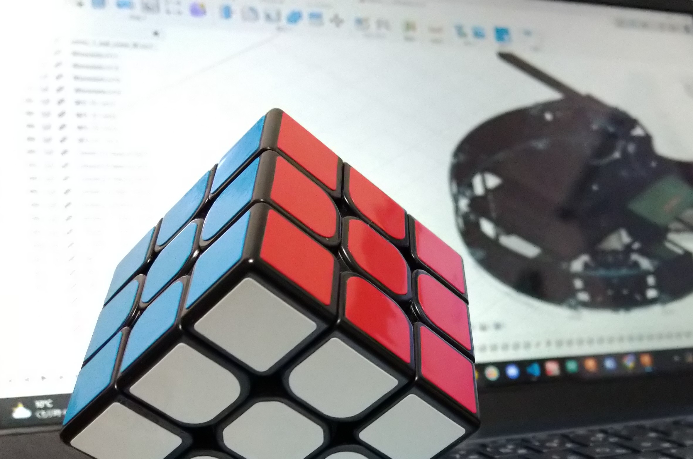

[ 2024/02/01 | AU ]
Toin ADMIXに所属しており去年度はプログラムのみ、今年度はプログラム、機体設計、基板設計（ラインと電源基盤だけ）、ホームページ運営をしています。 ADMIXができる前は桐蔭DXというチームでビギナーズ（現エントリー）の2022けいはんなに出場しました。 プログラミングを始めたのは中学生になってからなのでまだまだ経験が浅いですが、シンプルさをいつも意識して書くようにしています。 今年度の機体は1度完成してから変更した点が山ほどあったので、来年度はもっと構想を固めてからロボットの設計をしたいと思っています。 StarWarsとBruno Marsを愛してます。
僕は主に大会等の結果報告とソフト関連の記事を余裕があるときに書こうと思っています。（全然更新しなかったらスイマセン）
また、このブログのほかにホームページやX（旧Twitter）でも情報共有をしていこうと思っているので、ぜひそちらもご覧ください。
では、また次の記事でお会いしましょう。
（↓電車でトランプしたらダメなんですか？）


© 2023 AU - Toin ADMIX